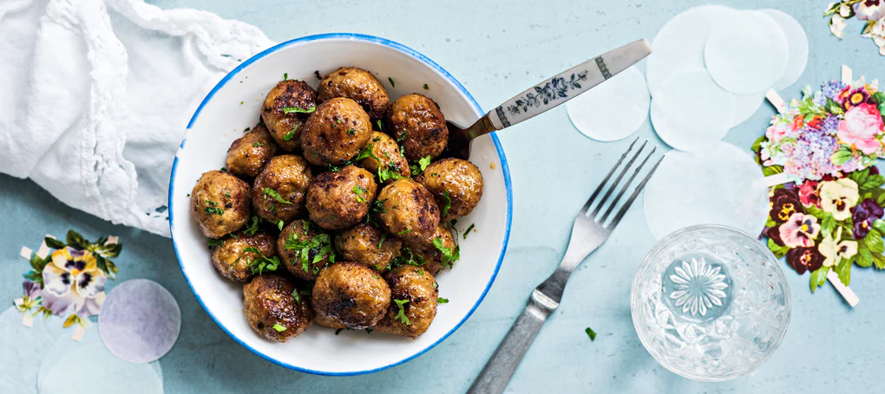

Chicken Meatballs

Description
A cheap and quickly-made meal that serves six.
These meatballs are made with chicken and seasoned with pesto.
Ingredients
- Minced chicken meat | 400 g
- Pesto | 2 1/2 tbsp
- Egg | 1 pc
- Oats | 1 dl
- Ground pepper | sprinkle
- Oil for frying
Steps
- Mix the egg, pesto and the oats with the minced meat. Season with a sprinkle of pepper.
- Round up 30 meatballs and fry on a hot pan in oil for around 10 minutes flipping them from side to side now and then.